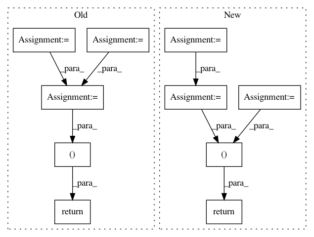

6bf3f51cd0a312da842157665663c2dad9983248,tensorflow_ranking/python/losses_impl.py,ClickEMLoss,_compute_latent_prob,#ClickEMLoss#Any#Any#Any#,914
Before Change
P(examination | click) and P(relevance | click).
with tf.compat.v1.name_scope(name="compute_latent_prob"):
exam_prob = tf.math.sigmoid(tf.cast(exam_logits, tf.float32))
rel_prob = tf.math.sigmoid(tf.cast(rel_logits, tf.float32))
is_clicked = tf.greater_equal(tf.cast(clicks, tf.float32), 1.0)
prob_non_clicks = 1 - exam_prob * rel_prob + 1e-6
exam_prob_given_non_clicks = exam_prob * (1 - rel_prob) / prob_non_clicks
rel_prob_given_non_clicks = (1 - exam_prob) * rel_prob / prob_non_clicks
exam_prob_given_non_clicks, rel_prob_given_non_clicks = [
tf.stop_gradient(
tf.compat.v1.where(is_clicked, tf.ones_like(prob), prob))
for prob in [exam_prob_given_non_clicks, rel_prob_given_non_clicks]
]
return exam_prob_given_non_clicks, rel_prob_given_non_clicks
def compute_unreduced_loss(self, labels, logits):
Computes the loss for each element.
After Change
with tf.compat.v1.name_scope(name="compute_latent_prob"):
is_clicked = tf.greater_equal(tf.cast(clicks, tf.float32), 1.0)
exam_logits_posterior = exam_logits - tf.math.softplus(rel_logits)
rel_logits_posterior = rel_logits - tf.math.softplus(exam_logits)
exam_prob_posterior = tf.compat.v1.where(
is_clicked, tf.ones_like(exam_logits_posterior),
tf.sigmoid(exam_logits_posterior))
rel_prob_posterior = tf.compat.v1.where(
is_clicked, tf.ones_like(rel_logits_posterior),
tf.sigmoid(rel_logits_posterior))
return tf.stop_gradient(exam_prob_posterior), tf.stop_gradient(
rel_prob_posterior)
def compute_unreduced_loss(self, labels, logits):
Computes the loss for each element.
In pattern: SUPERPATTERN
Frequency: 3
Non-data size: 10
Instances
Project Name: tensorflow/ranking
Commit Name: 6bf3f51cd0a312da842157665663c2dad9983248
Time: 2021-01-29
Author: xuanhui@google.com
File Name: tensorflow_ranking/python/losses_impl.py
Class Name: ClickEMLoss
Method Name: _compute_latent_prob
Project Name: NVIDIA/OpenSeq2Seq
Commit Name: cb556a585da0b65d28d2fc7d52c3851ac1a7d369
Time: 2018-05-30
Author: igor.a.gitman@gmail.com
File Name: open_seq2seq/utils/utils.py
Class Name:
Method Name: get_results_for_epoch
Project Name: asyml/texar
Commit Name: ecbe066e40882b166401b70ae9c4f1d535c93b12
Time: 2017-12-21
Author: zichaoy@cs.cmu.edu
File Name: texar/losses/adv_losses.py
Class Name:
Method Name: binary_adversarial_losses